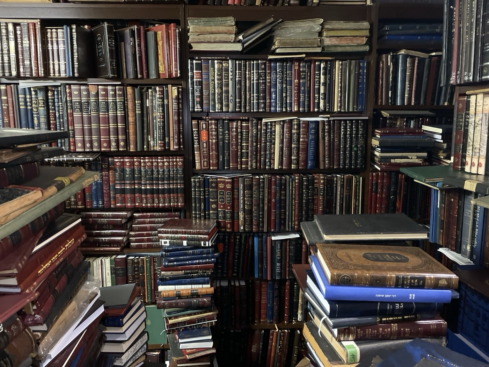

פרויקט הספרייה
לשמור על 50,000 ספרים לדורות הבאים
פרויקט הספרייה מוקדש להנצחת מורשתו של הרב שלום זצ״ל באמצעות סידור, ארכוב ודיגיטציה של אוסף הספרים ההיסטורי שלו, המונה כ-50,000 ספרים — ובניית בית ראוי לשכנם.
- סידור וארכוב של אוסף שנבנה במשך כ-45 שנה
- דיגיטציה כדי שהספרים יהיו נגישים ללומדים בכל מקום
- בניית בית ראוי לאוסף
קטלוג
ספרים שאינם נמצאים בשום מקום אחר
צוות קטלוג מסור מתעד אלפי ספרים ומצליב אותם עם המאגרים הגדולים:
אוצר החכמהHebrewBooksספריית חב״ד
כבר עתה זוהו עשרות ספרים באוסף שאינם זמינים באף אחד מהמאגרים הללו — עדות לערכו הייחודי של האוסף לעולם התורה.
36,000+קוטלגו עד כה
להקדשת הפרויקט
גלריית ספרים
מבט אל תוך האוסף
באינסטגרם
מן האוסף
בכל פוסט מוצג ספר אחר מספרייתו של הרב שלום, עם הסבר קצר על מחברו וסיפורו.